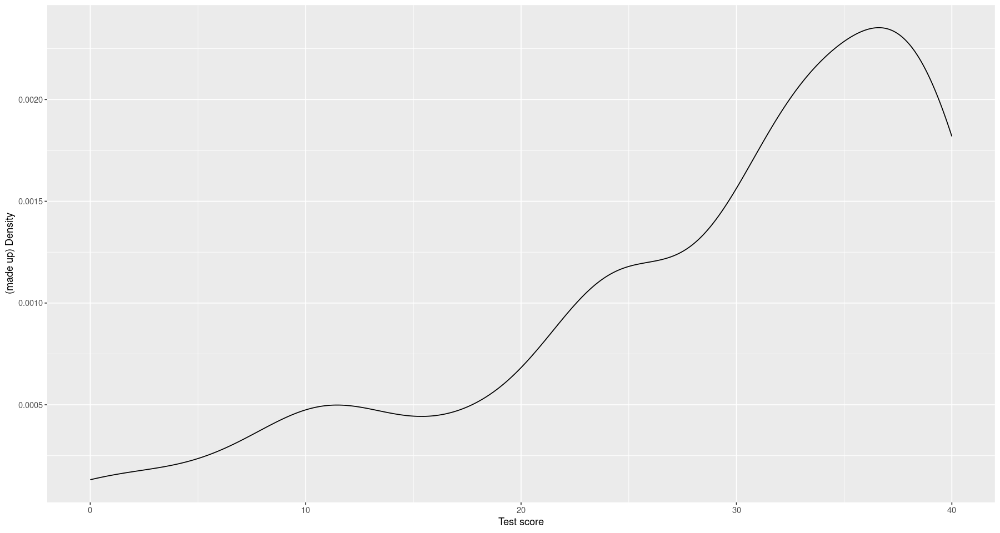
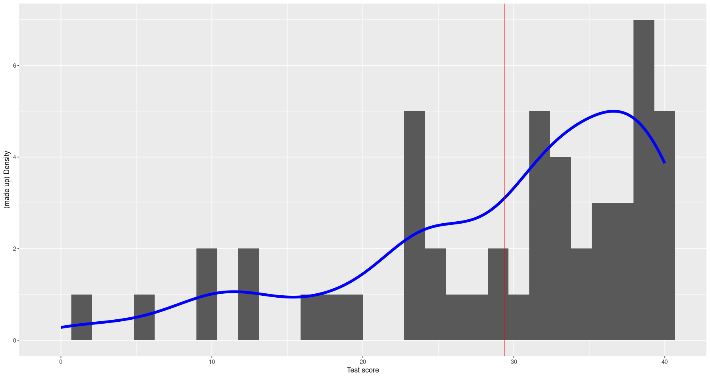
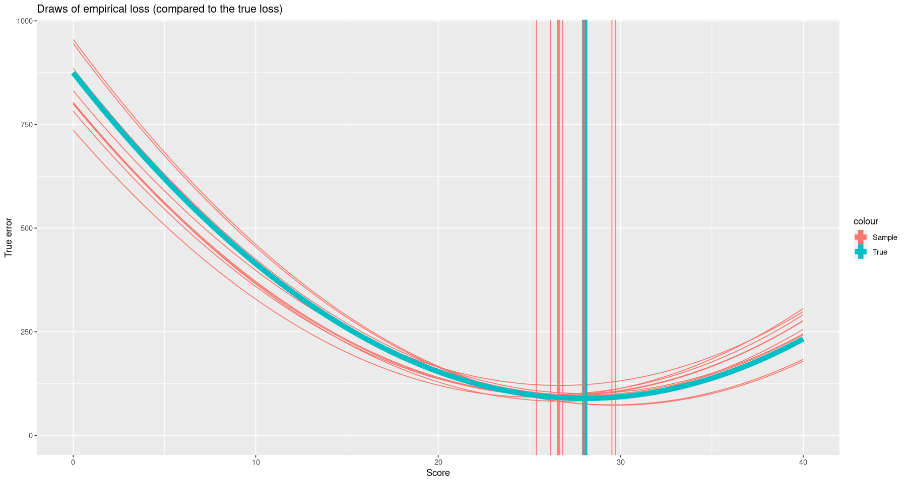

library(tidyverse)
library(gridExtra)
library(plotly)
options(repr.plot.width=15, repr.plot.height=8)CLT and prediction examples
scores <- read.csv("final_exams_spring24.csv")$Total
n_obs <- length(scores)
ybar <- mean(scores)
hist(scores) bandwidth <- 3
eval_score_dens <- function(x) {
return(mean(dnorm(x- scores, sd=bandwidth)))
}
score_grid <- seq(0, 40, length.out=1000)
score_dens <- sapply(score_grid, eval_score_dens)
score_dens <- score_dens / sum(score_dens)
score_df <- cumsum(score_dens) / sum(score_dens)
# Look at my (made-up) density
ggplot() +
geom_line(aes(x=score_grid, y=score_dens)) +
xlab("Test score") + ylab("(made up) Density")
score_dist_df <- data.frame(score=score_grid, score_dens=score_dens * 5 / max(score_dens))
eval_score_df_inv <- approxfun(x=c(0, score_df), y=c(0, score_grid))
draw_scores <- function(n_obs) {
u <- runif(n_obs)
draws <- round(eval_score_df_inv(u))
return(draws)
}
# The original data with my inferred density
ggplot() +
geom_histogram(aes(x=scores), bins=30) +
geom_line(aes(x=score, y=score_dens), color="blue", data=score_dist_df, lwd=2) +
geom_vline(aes(xintercept=mean(scores)), color="red") +
xlab("Test score") + ylab("(made up) Density")
# Draw score distributions
#scores_df <- data.frame(draw_ind=0, scores=scores)
scores_df <- data.frame()
for (num_draws in c(10, 40, 100, 500)) {
for (draw_ind in 1:100) {
scores_df <- bind_rows(
scores_df,
data.frame(
draw_ind=draw_ind,
num_draws=num_draws,
scores=draw_scores(num_draws)))
}
}
scores_df <-
scores_df %>%
group_by(num_draws, draw_ind) %>%
mutate(ybar=mean(scores))
score_means <-
scores_df %>%
group_by(draw_ind, num_draws) %>%
summarize(ybar=mean(scores))
# Showing the fact that different draws lead to different histrograms and different means
inner_join(scores_df, score_means, by=c("draw_ind", "num_draws")) %>%
filter(draw_ind < 5, num_draws == 40) %>%
ggplot() +
geom_histogram(aes(x=scores)) +
geom_vline(aes(xintercept=ybar), color="red") +
facet_grid(~ draw_ind)
`summarise()` has grouped output by 'draw_ind'. You can override using the `.groups` argument.
`stat_bin()` using `bins = 30`. Pick better value with `binwidth`.The CLT and LLN
# The distribution of the score means for different numbers of draws
score_means %>%
ggplot() +
geom_vline(aes(xintercept=ybar), color="red", alpha=0.2) +
geom_histogram(aes(x=scores), alpha=0.2, data=data.frame(scores=scores)) +
geom_density(aes(x=ybar), color="red", lwd=2) +
facet_grid(num_draws ~ .) +
xlim(0, 40)
`stat_bin()` using `bins = 30`. Pick better value with `binwidth`.
Warning message:
“Removed 8 rows containing missing values (`geom_bar()`).”# The same plot with everything on the same panel
ggplot() +
geom_histogram(aes(x=scores), alpha=0.4) +
geom_line(aes(x=score_grid, y=5 * score_dens / max(score_dens), color="1"), lwd=2) +
geom_density(aes(x=ybar, y=..density.. * 5 / max(..density..), color=ordered(num_draws), group=num_draws),
data=score_means,
lwd=2) +
labs(color="Number of draws") +
xlim(25, 30)
#ggplotly(p)Warning message:
“The dot-dot notation (`..density..`) was deprecated in ggplot2 3.4.0.
ℹ Please use `after_stat(density)` instead.”
`stat_bin()` using `bins = 30`. Pick better value with `binwidth`.
Warning message:
“Removed 44 rows containing non-finite values (`stat_bin()`).”
Warning message:
“Removed 50 rows containing non-finite values (`stat_density()`).”
Warning message:
“Removed 2 rows containing missing values (`geom_bar()`).”
Warning message:
“Removed 875 rows containing missing values (`geom_line()`).”
Prediction
mean_true <- sum(score_dens * score_grid) / sum(score_dens)
mean_true
eval_true_prediction_error <- function(score_guess) {
return(sum(score_dens * (score_grid - score_guess)^2) / sum(score_dens))
}
true_prediction_error <- sapply(score_grid, eval_true_prediction_error)
plt <-
ggplot() +
geom_line(aes(x=score_grid, y=true_prediction_error)) +
geom_vline(aes(xintercept=mean_true, color="True mean")) +
geom_vline(aes(xintercept=ybar, color="Sample mean")) +
xlab("Score") + ylab("True error") + expand_limits(y=0)
grid.arrange(plt + ggtitle("True loss"),
plt + xlim(25,35) + ylim(0, 250) + ggtitle("(Zoomed in)"), ncol=2)
28.0258687403645
Warning message:
“Removed 750 rows containing missing values (`geom_line()`).”
eval_sample_prediction_error <- function(score_guess, obs_scores) {
return(mean((obs_scores - score_guess)^2))
}
sample_prediction_error <- sapply(score_grid, \(s) eval_sample_prediction_error(s, scores))
plt <-
ggplot() +
geom_line(aes(x=score_grid, y=sample_prediction_error)) +
geom_vline(aes(xintercept=mean_true, color="True mean")) +
geom_vline(aes(xintercept=ybar, color="Sample mean")) +
xlab("Score") + ylab("True error") + expand_limits(y=0)
grid.arrange(plt + ggtitle("Empirical loss"),
plt + xlim(25,35) + ylim(0, 250) + ggtitle("(zoomed in)"), ncol=2)Warning message:
“Removed 750 rows containing missing values (`geom_line()`).”pred_df <- data.frame()
for (draw_ind in 1:10) {
scores_draw <- draw_scores(length(scores))
sample_prediction_error <- sapply(
score_grid, \(s) eval_sample_prediction_error(s, scores_draw))
pred_df <- bind_rows(
pred_df,
data.frame(
score=score_grid,
err=sample_prediction_error,
sample_mean=mean(scores_draw),
draw_ind=draw_ind))
}
ggplot() +
geom_line(aes(x=score, y=err, group=draw_ind, color="Sample"), data=pred_df) +
xlab("Score") + ylab("True error") + expand_limits(y=0) +
geom_vline(aes(xintercept=mean_true, color="True"), lwd=3) +
geom_vline(aes(xintercept=sample_mean, color="Sample"), data=pred_df) +
geom_line(aes(x=score_grid, y=true_prediction_error, color="True"), lwd=3) +
ggtitle("Draws of empirical loss (compared to the true loss)")